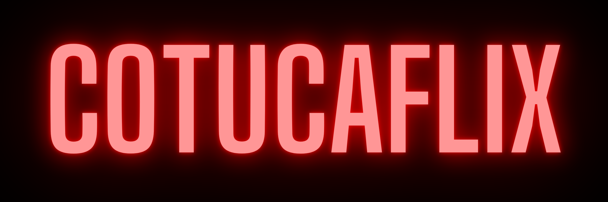

Créditos
Recursos usados para a criação do COTUCAFLIX:
Imagens
Logos do COTUCAFLIX: Produzidas por Ion Mateus
Cartaz de Avatar: Imagem
Cartaz de Vingadores: Ultimato: Imagem
Cartaz de Titanic: Imagem
Cartaz de Jurassic World: Fallen Kingdom: Imagem
Cartaz de Harry Potter e o Prisioneiro de Azkaban: Imagem
Filmes mencionados
Avatar
Vingadores: Ultimato
Titanic
Jurassic World: Fallen Kingdom
Harry Potter e o Prisioneiro de Azkaban
Referências e inspirações
Nome: Inspirado por Netflix e Cotuca
Site e cores: Inspirado por Netflix
Ferramentas usadas
Visual Studio Code
Canva